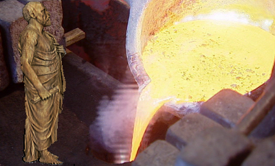

Lead Exports (Special exports)
A single-level building: there is nothing to upgrade it into.
Pictures are the game's own building art. Where a culture ships none of its own, the game falls back to another culture's, and that is what is shown here.
Lead Exports (Special exports)

Making aqueducts run and baths just a little bit more dangerous by spreading lead through the empire, one pipe at a time.
This region provides the empire with a steady flow of lead, filling pipes, tiles, and, occasionally, that weird little trinket you don’t really need but feel good buying.
As lead spreads throughout the nation, so does your people luxury, after all, how else would they drink water or pretend to care about their sanitation?
The pipes may leak a bit, but that’s just the price of progress.
| Cost | 13,000 denarii | Build time | 10 turns | Minimum settlement | city |
What it does
- +2 trade income
- -5 public order (happiness)
- -3 population growth
Show 1 effect that apply only in the circumstances shown
- mine resource +2 — only when
not no_other_government and is_player
What the shorthands in those conditions stand for (1)
These are the mod's own, quoted from the game files unchanged.
| Shorthand | Stands for | Shorthand | Stands for | Shorthand | Stands for |
|---|---|---|---|---|---|
no_other_government | no_building_tagged government queued |